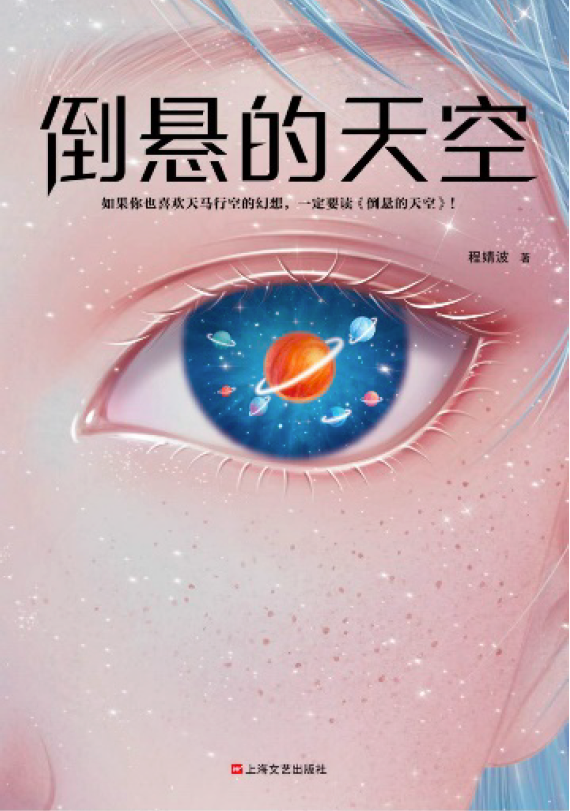

"Under a Dangling Sky" / 《倒悬的天空》(2004) by Cheng Jingbo / 程婧波
Translated by Ken Liu (2019)
Our reading for January 2021
Sunday 31st January - London: 14:00 = Beijing 22:00, lasting about 1hr30
Video call with the author and the London Chinese Science Fiction Group
Online: Zoom - email us with "Count me in for LCSFG's next meeting!" and we'll send you a video call link and password a day before the session.
Story Summary
"The sky brightened abruptly. A deafening noise crashed from the top of the fountain. Countless cracks zigzagged from the center of the dark blue welkin. Wind and stars tumbled through the opening and fell into the sea. The dome continued to crack open, as if the beanstalk was pushing, growing, forcing its way deeper beyond the barrier. My head rang from the thunderous noise, and my eyes were filled with fantastic visions that eventually melded into a single blinding brightness.
The crystal sky fell."
- from Under a Dangling Sky by Cheng Jingbo, translated by Ken Liu (2019)
* * *
"Under a Dangling Sky" floats us from the region of Rainville into a dreamy mapping that spans the breadth of the sky and oceans, to the verticality of two planets' gravitational axes. In search for the dolphin's song, the protagonist whimsically observes the water cycle's interactions with the elements. That is until the crystal sky falls and collides with the sea, and the strange process births new stars to become the Delphinus constellation.
Cheng Jingbo draws inspiration from Greek mythology, the fairytale Jack and the Beanstalk and David Brin's SSF The Crystal Spheres to form this spatially generous speculative short story.
The short story can be found in its original publication in "Science Fiction World" 《科幻世界》in 2004, and its English translation by Ken Liu for his edited collection "Broken Stars" (2019). You may also contact the LCSFG (by email) to receive an e-copy in English and/or Chinese, distributed with the author's permission and limited to this session.
Please read ahead for this month's online video call, but if you don't get a chance to do so, you are still warmly welcome to join in. Share your thoughts and questions, engage with others, and chat with us and Bo about the story in this upcoming session!
The author
Cheng Jingbo (aka ‘Bo’) represents China’s new generation of female science fiction writers. In 1999, Bo published her first story ‘Think Like an Apple’ as part of the first sci-fi magazine sold to a global audience, Science Fiction World. The story won First Prize in the Teenager Sci-Fi Writers Awards, an accolade which served as an astronomical platform for Bo and cemented an unshakeable connection between herself, science fiction, and the infinite possibilities of the universe’s mysteries.

In 2002, her story ‘Western Paradise’ was nominated for a Galaxy Award. In 2010, ‘Lost in Luoyang’ won First Prize in the Youth Literature Awards hosted by the Chinese Contemporary Literature Research Association, and also went on to win Best Short Story in the First Xingyun (Nebula) Awards for Global Chinese Science Fiction.
In 2013, she won the Best Novelette Award (Fourth Xingyun (Nebula) Awards for Global Chinese Science Fiction) with ‘The Ripper of the City of Peel’. In 2019, Bo won Screenwriter of the Year in the First Chinese International Writer Festival held by the China Youth Press for her sci-fi script ‘Hotel 8’. In the same year, Bo also won First Prize in the Leng Hu Sci-Fi Awards for her sci-fi novelette ‘Host’. Bo’s works have been translated into several languages, including English, Japanese, German, Italian and Spanish.
The translator
Ken Liu, a winner of the Nebula, Hugo, and World Fantasy awards, is the author of 'The Dandelion Dynasty', a silkpunk
epic fantasy series (starting with 'The Grace of Kings'), as well as 'The Paper Menagerie and Other Stories' and 'The Hidden
Girl and Other Stories'.